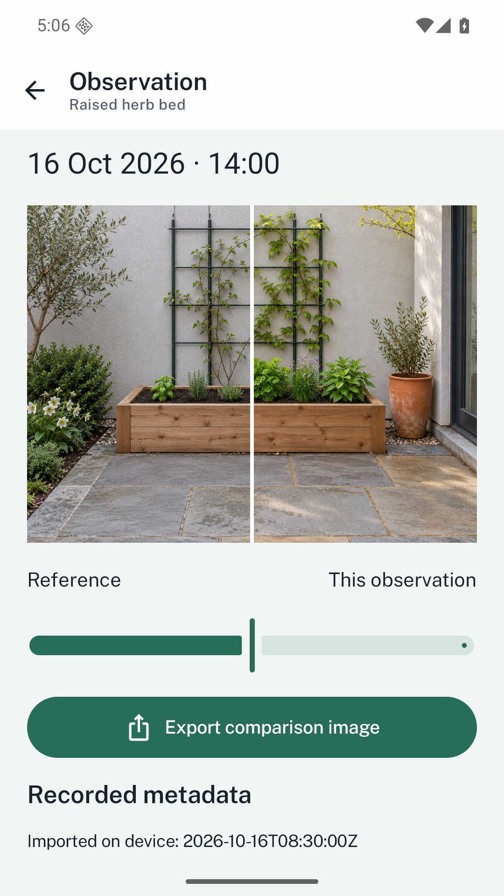
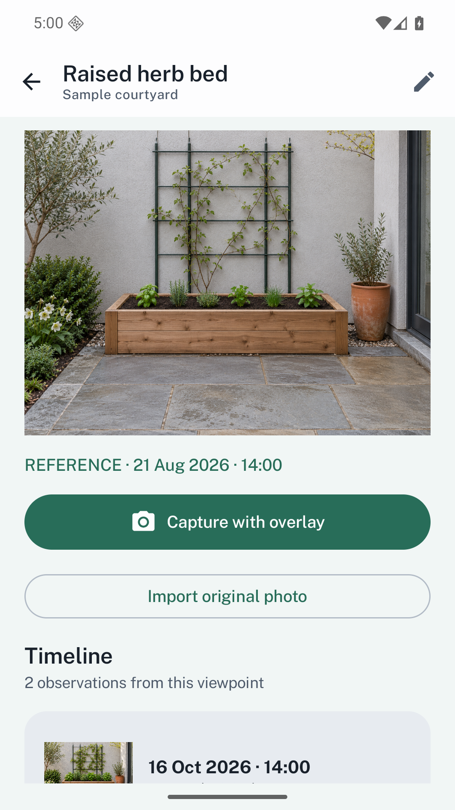
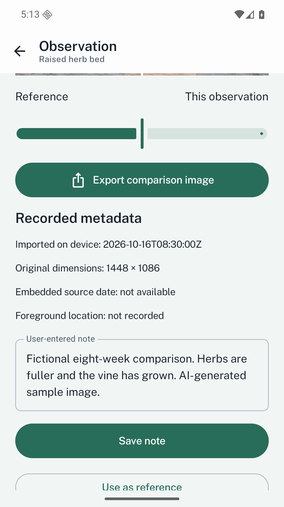

Start with a reference
Organize projects into named viewpoints. The first image becomes the reference, and any later observation can replace it.
Return to a viewpoint and see what changed.
View on Google PlayPreparing for releaseUS $4.99 · UK £3.99 · India ₹199
One upfront purchase. Every feature included.

Repeat photos with reference overlays, dated comparisons and portable reports. All core features are included in the purchase, with no extra unlocks.
Organize projects into named viewpoints. The first image becomes the reference, and any later observation can replace it.
Use an adjustable reference overlay while capturing in portrait or landscape. Originals remain untouched.
Slide between reference and observation, add notes and follow the dated timeline. Foreground location is optional.
Export comparison images, PDF reports, unchanged originals or a full project archive.


Capture/import timestamps, embedded source dates and user-entered notes are labelled separately. Location is recorded only when you enable it and grant permission; capture still works without it.
Alignment is manual. Frameback does not certify evidence, authenticate dates or provide surveying accuracy. A clearly labelled fictional courtyard sample is included to explore the workflow.
Android 8.0 or later. English interface. Archive limits: 4 GB expanded; individual media files up to 200 MB where applicable. Read the practical details.
No. The original is preserved. The overlay helps you frame a new capture; comparison images are separate exports.
No. Capture and import work without location. When enabled, the app waits for a foreground location fix and records its reported accuracy if available.
Frameback is a visual observation tool. It does not authenticate photos, certify evidence or make survey measurements.
No. The included courtyard project is clearly labelled fictional and uses generated images for demonstration.